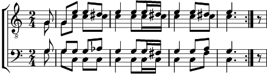

1. Au jardin de mon père,
digue don, ma dondon (bis)
Il est un vieux pommier,
digue don, ma dondaine,
Il est un vieux pommier,
digue don, ma dondon.
2. Il est couvert de feuilles, ... (bis)
Et de fleurs, au printemps ...
3. Il n'a jamais de pommes ... (bis)
Quand l'automne est venu...
4. Allons couper cet arbre ... (bis)
Et le mettre en fagots, ...
5. Il cuira nos " cuchôles " ... (bis)
Voici la bénichon, ...